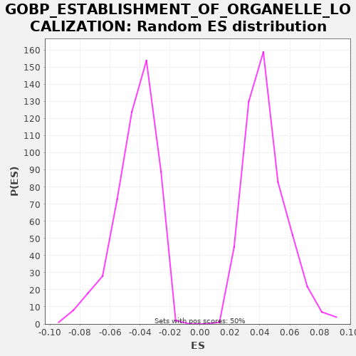

| | | Dataset | A_X_tradeoff |
| Phenotype | NoPhenotypeAvailable |
| Upregulated in class | na_neg |
| GeneSet | GOBP_ESTABLISHMENT_OF_ORGANELLE_LOCALIZATION |
| Enrichment Score (ES) | -0.24300508 |
| Normalized Enrichment Score (NES) | -5.6664004 |
| Nominal p-value | 0.0 |
| FDR q-value | 0.0 |
| FWER p-Value | 0.0 |
Table: GSEA Results Summary
 Fig 1: Enrichment plot: GOBP_ESTABLISHMENT_OF_ORGANELLE_LOCALIZATION
Fig 1: Enrichment plot: GOBP_ESTABLISHMENT_OF_ORGANELLE_LOCALIZATION
Profile of the Running ES Score & Positions of GeneSet Members on the Rank Ordered List
| SYMBOL | RANK IN GENE LIST | RANK METRIC SCORE | RUNNING ES | CORE ENRICHMENT | | 1 | SLC2A4 | 198 | -0.001 | -0.0078 | No |
| 2 | RMDN1 | 343 | -0.002 | -0.0128 | No |
| 3 | MYO5C | 355 | -0.002 | -0.0108 | No |
| 4 | SLC9A3R1 | 694 | -0.004 | -0.0259 | No |
| 5 | PIK3CD | 847 | -0.005 | -0.0313 | No |
| 6 | CHMP4C | 965 | -0.005 | -0.0349 | No |
| 7 | RAB27B | 1544 | -0.008 | -0.0626 | No |
| 8 | COL7A1 | 1612 | -0.009 | -0.0636 | No |
| 9 | BBS7 | 1657 | -0.009 | -0.0633 | No |
| 10 | MILR1 | 1844 | -0.010 | -0.0705 | No |
| 11 | CLNK | 1958 | -0.011 | -0.0738 | No |
| 12 | HMOX1 | 2002 | -0.011 | -0.0735 | No |
| 13 | MAPK15 | 2010 | -0.011 | -0.0713 | No |
| 14 | GORASP1 | 2214 | -0.012 | -0.0794 | No |
| 15 | SEC23A | 2339 | -0.013 | -0.0833 | No |
| 16 | NDE1 | 2382 | -0.013 | -0.0829 | No |
| 17 | PINX1 | 2406 | -0.013 | -0.0815 | No |
| 18 | KATNB1 | 2414 | -0.014 | -0.0793 | No |
| 19 | SYNE3 | 2416 | -0.014 | -0.0768 | No |
| 20 | PARD3B | 2430 | -0.014 | -0.0749 | No |
| 21 | IL13RA2 | 2810 | -0.016 | -0.0922 | No |
| 22 | NAPA | 2854 | -0.016 | -0.0919 | No |
| 23 | LGALS9 | 3070 | -0.018 | -0.1006 | No |
| 24 | UNC13D | 3101 | -0.018 | -0.0996 | No |
| 25 | PINK1 | 3278 | -0.019 | -0.1062 | No |
| 26 | NUP62 | 3385 | -0.020 | -0.1092 | No |
| 27 | MYO1A | 3397 | -0.020 | -0.1072 | No |
| 28 | PREB | 3451 | -0.020 | -0.1074 | No |
| 29 | CDC42 | 3535 | -0.021 | -0.1092 | No |
| 30 | BLOC1S6 | 3604 | -0.021 | -0.1102 | No |
| 31 | CNIH3 | 3612 | -0.021 | -0.1080 | No |
| 32 | BET1 | 3713 | -0.022 | -0.1107 | No |
| 33 | BICD2 | 4065 | -0.025 | -0.1265 | No |
| 34 | KIF22 | 4360 | -0.028 | -0.1393 | No |
| 35 | OOEP | 4365 | -0.028 | -0.1370 | No |
| 36 | SUN2 | 4511 | -0.029 | -0.1420 | No |
| 37 | STARD3 | 4723 | -0.031 | -0.1505 | No |
| 38 | CHMP4B | 4816 | -0.032 | -0.1527 | No |
| 39 | DNM1 | 4851 | -0.032 | -0.1519 | No |
| 40 | STARD3NL | 4864 | -0.032 | -0.1500 | No |
| 41 | SNAPIN | 5035 | -0.034 | -0.1563 | No |
| 42 | MYO1H | 5100 | -0.035 | -0.1571 | No |
| 43 | TRAPPC3 | 5344 | -0.037 | -0.1673 | No |
| 44 | NTN1 | 5533 | -0.039 | -0.1746 | No |
| 45 | LSG1 | 5565 | -0.040 | -0.1736 | No |
| 46 | KIF3A | 5652 | -0.041 | -0.1755 | No |
| 47 | TRAPPC5 | 5881 | -0.044 | -0.1849 | No |
| 48 | KIF1C | 5942 | -0.044 | -0.1855 | No |
| 49 | CTSC | 5971 | -0.045 | -0.1844 | No |
| 50 | GEM | 6093 | -0.046 | -0.1882 | No |
| 51 | NOP9 | 6204 | -0.048 | -0.1913 | No |
| 52 | MKKS | 6305 | -0.049 | -0.1940 | No |
| 53 | FGR | 6313 | -0.049 | -0.1918 | No |
| 54 | SNAP23 | 6319 | -0.049 | -0.1895 | No |
| 55 | PSRC1 | 6398 | -0.050 | -0.1910 | No |
| 56 | LAT2 | 6665 | -0.054 | -0.2024 | No |
| 57 | RIPOR1 | 6769 | -0.055 | -0.2052 | No |
| 58 | RAN | 6935 | -0.058 | -0.2113 | No |
| 59 | FHOD1 | 7050 | -0.059 | -0.2147 | No |
| 60 | LAT | 7249 | -0.062 | -0.2225 | No |
| 61 | UBE2B | 7311 | -0.063 | -0.2231 | No |
| 62 | LYN | 7394 | -0.064 | -0.2248 | No |
| 63 | CFL1 | 7451 | -0.065 | -0.2252 | No |
| 64 | CENPA | 7533 | -0.066 | -0.2269 | No |
| 65 | BLOC1S5 | 7588 | -0.067 | -0.2271 | No |
| 66 | GOSR2 | 7602 | -0.067 | -0.2252 | No |
| 67 | VAMP7 | 7626 | -0.067 | -0.2239 | No |
| 68 | MLPH | 7817 | -0.070 | -0.2312 | No |
| 69 | LMAN1 | 7863 | -0.071 | -0.2310 | No |
| 70 | UXT | 7900 | -0.071 | -0.2303 | No |
| 71 | PDCD6 | 7946 | -0.072 | -0.2301 | No |
| 72 | CHMP2B | 8025 | -0.073 | -0.2316 | No |
| 73 | TRAPPC1 | 8077 | -0.074 | -0.2317 | No |
| 74 | CEP19 | 8265 | -0.078 | -0.2390 | No |
| 75 | TMEM201 | 8343 | -0.079 | -0.2404 | Yes |
| 76 | MYO1C | 8373 | -0.079 | -0.2394 | Yes |
| 77 | TOR1A | 8385 | -0.080 | -0.2374 | Yes |
| 78 | CTSZ | 8451 | -0.081 | -0.2382 | Yes |
| 79 | AREG | 8469 | -0.081 | -0.2365 | Yes |
| 80 | SAR1B | 8568 | -0.082 | -0.2391 | Yes |
| 81 | FES | 8584 | -0.083 | -0.2373 | Yes |
| 82 | SYNE2 | 8601 | -0.083 | -0.2356 | Yes |
| 83 | TMED10 | 8652 | -0.084 | -0.2356 | Yes |
| 84 | SPG11 | 8756 | -0.086 | -0.2384 | Yes |
| 85 | MLH1 | 8774 | -0.086 | -0.2367 | Yes |
| 86 | PEF1 | 8787 | -0.086 | -0.2348 | Yes |
| 87 | MYO7A | 8825 | -0.087 | -0.2342 | Yes |
| 88 | GJA1 | 8849 | -0.087 | -0.2328 | Yes |
| 89 | SPICE1 | 8855 | -0.088 | -0.2305 | Yes |
| 90 | NR4A3 | 8968 | -0.090 | -0.2338 | Yes |
| 91 | EZR | 8972 | -0.090 | -0.2313 | Yes |
| 92 | AP3M2 | 9076 | -0.091 | -0.2342 | Yes |
| 93 | LRRK2 | 9194 | -0.093 | -0.2377 | Yes |
| 94 | MYO1G | 9232 | -0.094 | -0.2371 | Yes |
| 95 | GPSM2 | 9239 | -0.094 | -0.2348 | Yes |
| 96 | CDK5 | 9308 | -0.095 | -0.2358 | Yes |
| 97 | MAP4K2 | 9313 | -0.096 | -0.2335 | Yes |
| 98 | GRIA1 | 9328 | -0.096 | -0.2316 | Yes |
| 99 | BBS2 | 9410 | -0.097 | -0.2333 | Yes |
| 100 | EML3 | 9411 | -0.097 | -0.2307 | Yes |
| 101 | CROCC | 9423 | -0.097 | -0.2287 | Yes |
| 102 | VAMP8 | 9489 | -0.099 | -0.2295 | Yes |
| 103 | COPG1 | 9547 | -0.100 | -0.2299 | Yes |
| 104 | FOXF1 | 9548 | -0.100 | -0.2274 | Yes |
| 105 | PRKN | 9568 | -0.100 | -0.2258 | Yes |
| 106 | TRAPPC12 | 9614 | -0.101 | -0.2256 | Yes |
| 107 | WIPI1 | 9714 | -0.103 | -0.2282 | Yes |
| 108 | PEX14 | 9740 | -0.104 | -0.2269 | Yes |
| 109 | TMEM230 | 9752 | -0.104 | -0.2249 | Yes |
| 110 | SEC16B | 9753 | -0.104 | -0.2223 | Yes |
| 111 | BLOC1S1 | 9791 | -0.105 | -0.2217 | Yes |
| 112 | GATA2 | 9869 | -0.107 | -0.2232 | Yes |
| 113 | BLOC1S4 | 9877 | -0.107 | -0.2210 | Yes |
| 114 | FGF10 | 9886 | -0.107 | -0.2188 | Yes |
| 115 | SHROOM2 | 9909 | -0.107 | -0.2174 | Yes |
| 116 | PIK3CG | 9913 | -0.107 | -0.2150 | Yes |
| 117 | MYO1D | 9918 | -0.108 | -0.2126 | Yes |
| 118 | BTK | 10072 | -0.111 | -0.2180 | Yes |
| 119 | SAR1A | 10100 | -0.111 | -0.2169 | Yes |
| 120 | MAPT | 10165 | -0.112 | -0.2177 | Yes |
| 121 | TERB1 | 10275 | -0.115 | -0.2208 | Yes |
| 122 | UBB | 10310 | -0.115 | -0.2200 | Yes |
| 123 | UBXN2B | 10317 | -0.116 | -0.2177 | Yes |
| 124 | TCIRG1 | 10413 | -0.118 | -0.2201 | Yes |
| 125 | MYO1E | 10496 | -0.119 | -0.2219 | Yes |
| 126 | BLOC1S3 | 10620 | -0.122 | -0.2257 | Yes |
| 127 | KIFC1 | 10692 | -0.124 | -0.2269 | Yes |
| 128 | SEC13 | 10723 | -0.124 | -0.2259 | Yes |
| 129 | F8 | 10777 | -0.126 | -0.2261 | Yes |
| 130 | DCTN2 | 10973 | -0.131 | -0.2337 | Yes |
| 131 | IKBKG | 10976 | -0.131 | -0.2313 | Yes |
| 132 | CHMP6 | 11021 | -0.132 | -0.2310 | Yes |
| 133 | TRAPPC4 | 11128 | -0.135 | -0.2340 | Yes |
| 134 | SNAP29 | 11190 | -0.136 | -0.2346 | Yes |
| 135 | NUDC | 11205 | -0.137 | -0.2328 | Yes |
| 136 | CLN3 | 11217 | -0.137 | -0.2308 | Yes |
| 137 | GAB2 | 11237 | -0.137 | -0.2292 | Yes |
| 138 | CHMP7 | 11250 | -0.138 | -0.2272 | Yes |
| 139 | BBS5 | 11362 | -0.141 | -0.2305 | Yes |
| 140 | TESK1 | 11363 | -0.141 | -0.2279 | Yes |
| 141 | CSNK1D | 11389 | -0.141 | -0.2266 | Yes |
| 142 | CDH3 | 11421 | -0.142 | -0.2257 | Yes |
| 143 | TRAPPC9 | 11529 | -0.145 | -0.2287 | Yes |
| 144 | TRAPPC2L | 11535 | -0.145 | -0.2264 | Yes |
| 145 | MYO7B | 11549 | -0.145 | -0.2245 | Yes |
| 146 | FYCO1 | 11598 | -0.146 | -0.2244 | Yes |
| 147 | CNIH2 | 11836 | -0.152 | -0.2343 | Yes |
| 148 | TLE6 | 11858 | -0.153 | -0.2328 | Yes |
| 149 | RIOK2 | 11925 | -0.155 | -0.2337 | Yes |
| 150 | KLHL12 | 11972 | -0.156 | -0.2335 | Yes |
| 151 | TFG | 11981 | -0.156 | -0.2314 | Yes |
| 152 | RHOT1 | 11993 | -0.157 | -0.2294 | Yes |
| 153 | TRAPPC6B | 12026 | -0.157 | -0.2285 | Yes |
| 154 | TBC1D23 | 12040 | -0.158 | -0.2266 | Yes |
| 155 | MCPH1 | 12055 | -0.158 | -0.2247 | Yes |
| 156 | MYO1B | 12206 | -0.162 | -0.2300 | Yes |
| 157 | MCFD2 | 12213 | -0.162 | -0.2278 | Yes |
| 158 | CD300A | 12215 | -0.162 | -0.2253 | Yes |
| 159 | RPS15 | 12236 | -0.163 | -0.2237 | Yes |
| 160 | CCNB1 | 12461 | -0.169 | -0.2329 | Yes |
| 161 | STXBP2 | 12488 | -0.170 | -0.2317 | Yes |
| 162 | TRAPPC2 | 12558 | -0.172 | -0.2327 | Yes |
| 163 | AP3B1 | 12569 | -0.172 | -0.2307 | Yes |
| 164 | ITGB1 | 12611 | -0.173 | -0.2302 | Yes |
| 165 | NMD3 | 12650 | -0.174 | -0.2297 | Yes |
| 166 | PLA2G3 | 12660 | -0.175 | -0.2276 | Yes |
| 167 | SEC24D | 12718 | -0.176 | -0.2280 | Yes |
| 168 | KIF13A | 12727 | -0.177 | -0.2258 | Yes |
| 169 | NDEL1 | 12793 | -0.178 | -0.2266 | Yes |
| 170 | SDAD1 | 12869 | -0.180 | -0.2280 | Yes |
| 171 | CDT1 | 12901 | -0.181 | -0.2270 | Yes |
| 172 | EIF6 | 12927 | -0.182 | -0.2258 | Yes |
| 173 | CBL | 13012 | -0.185 | -0.2276 | Yes |
| 174 | MAP1S | 13050 | -0.186 | -0.2270 | Yes |
| 175 | PSEN1 | 13053 | -0.186 | -0.2245 | Yes |
| 176 | CHP1 | 13055 | -0.186 | -0.2220 | Yes |
| 177 | AP3S1 | 13189 | -0.190 | -0.2264 | Yes |
| 178 | SYK | 13216 | -0.191 | -0.2252 | Yes |
| 179 | CNIH1 | 13218 | -0.191 | -0.2226 | Yes |
| 180 | WDR11 | 13222 | -0.192 | -0.2202 | Yes |
| 181 | RRS1 | 13233 | -0.192 | -0.2182 | Yes |
| 182 | ARF1 | 13287 | -0.193 | -0.2184 | Yes |
| 183 | STK25 | 13289 | -0.193 | -0.2158 | Yes |
| 184 | SPHK2 | 13297 | -0.194 | -0.2136 | Yes |
| 185 | ATP6AP1 | 13364 | -0.196 | -0.2145 | Yes |
| 186 | SCFD1 | 13379 | -0.196 | -0.2127 | Yes |
| 187 | AP3S2 | 13389 | -0.197 | -0.2106 | Yes |
| 188 | SPIRE2 | 13423 | -0.198 | -0.2097 | Yes |
| 189 | LAMP1 | 13424 | -0.198 | -0.2071 | Yes |
| 190 | TBC1D20 | 13487 | -0.200 | -0.2078 | Yes |
| 191 | CHMP1A | 13565 | -0.203 | -0.2093 | Yes |
| 192 | PLK1 | 13570 | -0.203 | -0.2069 | Yes |
| 193 | ARL6 | 13576 | -0.203 | -0.2046 | Yes |
| 194 | SEC24A | 13585 | -0.204 | -0.2024 | Yes |
| 195 | ITGA4 | 13634 | -0.205 | -0.2024 | Yes |
| 196 | SPAG5 | 13677 | -0.207 | -0.2020 | Yes |
| 197 | ESPL1 | 13685 | -0.207 | -0.1998 | Yes |
| 198 | SEC22B | 13686 | -0.207 | -0.1972 | Yes |
| 199 | ACTR3 | 13690 | -0.207 | -0.1948 | Yes |
| 200 | KIF2C | 13694 | -0.207 | -0.1924 | Yes |
| 201 | LTV1 | 13707 | -0.208 | -0.1904 | Yes |
| 202 | ACTR10 | 13729 | -0.208 | -0.1890 | Yes |
| 203 | COPG2 | 13737 | -0.208 | -0.1867 | Yes |
| 204 | FOLR1 | 13746 | -0.209 | -0.1846 | Yes |
| 205 | MYO19 | 13766 | -0.209 | -0.1830 | Yes |
| 206 | NECTIN2 | 13871 | -0.213 | -0.1859 | Yes |
| 207 | NSFL1C | 14009 | -0.218 | -0.1905 | Yes |
| 208 | KIF3C | 14035 | -0.219 | -0.1892 | Yes |
| 209 | TRAPPC6A | 14062 | -0.220 | -0.1880 | Yes |
| 210 | SAPCD2 | 14097 | -0.221 | -0.1872 | Yes |
| 211 | SPRY2 | 14130 | -0.222 | -0.1863 | Yes |
| 212 | PDCD10 | 14173 | -0.224 | -0.1859 | Yes |
| 213 | LLGL1 | 14193 | -0.224 | -0.1844 | Yes |
| 214 | TMED9 | 14213 | -0.225 | -0.1828 | Yes |
| 215 | BORCS5 | 14313 | -0.229 | -0.1854 | Yes |
| 216 | PDPK1 | 14332 | -0.229 | -0.1838 | Yes |
| 217 | KIFAP3 | 14421 | -0.233 | -0.1858 | Yes |
| 218 | DLG1 | 14434 | -0.233 | -0.1839 | Yes |
| 219 | SLIT1 | 14439 | -0.233 | -0.1815 | Yes |
| 220 | MAP4 | 14445 | -0.234 | -0.1792 | Yes |
| 221 | BBS4 | 14447 | -0.234 | -0.1766 | Yes |
| 222 | FAM83D | 14500 | -0.236 | -0.1768 | Yes |
| 223 | TTL | 14524 | -0.237 | -0.1754 | Yes |
| 224 | RAC2 | 14534 | -0.237 | -0.1733 | Yes |
| 225 | GOSR1 | 14546 | -0.238 | -0.1713 | Yes |
| 226 | RAB11B | 14594 | -0.240 | -0.1712 | Yes |
| 227 | ZW10 | 14621 | -0.242 | -0.1700 | Yes |
| 228 | DTNBP1 | 14657 | -0.243 | -0.1693 | Yes |
| 229 | SEC16A | 14675 | -0.243 | -0.1676 | Yes |
| 230 | TMED2 | 14687 | -0.244 | -0.1656 | Yes |
| 231 | CHMP2A | 14717 | -0.246 | -0.1645 | Yes |
| 232 | AP3M1 | 14727 | -0.246 | -0.1624 | Yes |
| 233 | TGFA | 14758 | -0.247 | -0.1614 | Yes |
| 234 | HTT | 14819 | -0.250 | -0.1620 | Yes |
| 235 | TRIM46 | 14821 | -0.250 | -0.1594 | Yes |
| 236 | PIBF1 | 14826 | -0.250 | -0.1571 | Yes |
| 237 | RHOT2 | 14864 | -0.252 | -0.1564 | Yes |
| 238 | KIF3B | 14909 | -0.254 | -0.1562 | Yes |
| 239 | ARHGAP21 | 14956 | -0.256 | -0.1560 | Yes |
| 240 | DLGAP5 | 14964 | -0.257 | -0.1538 | Yes |
| 241 | SEC23IP | 14982 | -0.257 | -0.1521 | Yes |
| 242 | RAB6A | 15036 | -0.260 | -0.1523 | Yes |
| 243 | FBXW11 | 15080 | -0.261 | -0.1520 | Yes |
| 244 | AURKB | 15163 | -0.265 | -0.1537 | Yes |
| 245 | CEP120 | 15221 | -0.268 | -0.1541 | Yes |
| 246 | GOLGA2 | 15230 | -0.268 | -0.1520 | Yes |
| 247 | NEFL | 15276 | -0.270 | -0.1518 | Yes |
| 248 | TRAK2 | 15295 | -0.271 | -0.1501 | Yes |
| 249 | CDCA5 | 15303 | -0.272 | -0.1479 | Yes |
| 250 | OPA1 | 15310 | -0.272 | -0.1457 | Yes |
| 251 | CHAMP1 | 15324 | -0.273 | -0.1438 | Yes |
| 252 | MARK1 | 15351 | -0.274 | -0.1425 | Yes |
| 253 | BECN1 | 15360 | -0.274 | -0.1404 | Yes |
| 254 | CD84 | 15404 | -0.276 | -0.1401 | Yes |
| 255 | TRAK1 | 15425 | -0.277 | -0.1385 | Yes |
| 256 | CDC23 | 15487 | -0.280 | -0.1392 | Yes |
| 257 | CENPE | 15498 | -0.281 | -0.1371 | Yes |
| 258 | CENPQ | 15507 | -0.281 | -0.1349 | Yes |
| 259 | MAD1L1 | 15524 | -0.282 | -0.1332 | Yes |
| 260 | MREG | 15531 | -0.282 | -0.1309 | Yes |
| 261 | PPP6R1 | 15593 | -0.285 | -0.1316 | Yes |
| 262 | LIMK2 | 15644 | -0.288 | -0.1316 | Yes |
| 263 | MYO1F | 15696 | -0.290 | -0.1317 | Yes |
| 264 | CLASP2 | 15717 | -0.291 | -0.1302 | Yes |
| 265 | SEC24B | 15762 | -0.294 | -0.1299 | Yes |
| 266 | BOD1 | 15790 | -0.295 | -0.1288 | Yes |
| 267 | PPP6C | 15880 | -0.300 | -0.1308 | Yes |
| 268 | ANKRD28 | 15896 | -0.301 | -0.1291 | Yes |
| 269 | MYO6 | 15985 | -0.305 | -0.1311 | Yes |
| 270 | MAD2L1 | 16076 | -0.310 | -0.1332 | Yes |
| 271 | STK11 | 16094 | -0.310 | -0.1315 | Yes |
| 272 | WASL | 16098 | -0.311 | -0.1291 | Yes |
| 273 | PTGDS | 16108 | -0.312 | -0.1270 | Yes |
| 274 | MIS12 | 16144 | -0.314 | -0.1263 | Yes |
| 275 | SEH1L | 16149 | -0.314 | -0.1239 | Yes |
| 276 | SNX4 | 16156 | -0.314 | -0.1217 | Yes |
| 277 | SEC24C | 16217 | -0.317 | -0.1222 | Yes |
| 278 | DCTN1 | 16278 | -0.321 | -0.1228 | Yes |
| 279 | FER | 16283 | -0.321 | -0.1204 | Yes |
| 280 | FAM91A1 | 16332 | -0.324 | -0.1204 | Yes |
| 281 | CDCA8 | 16353 | -0.325 | -0.1188 | Yes |
| 282 | ATM | 16392 | -0.328 | -0.1183 | Yes |
| 283 | DOCK7 | 16402 | -0.328 | -0.1161 | Yes |
| 284 | VPS4A | 16428 | -0.330 | -0.1149 | Yes |
| 285 | DNM2 | 16441 | -0.331 | -0.1129 | Yes |
| 286 | ACTN4 | 16461 | -0.332 | -0.1114 | Yes |
| 287 | RAB1B | 16462 | -0.332 | -0.1088 | Yes |
| 288 | ARFGAP2 | 16530 | -0.336 | -0.1097 | Yes |
| 289 | NDC80 | 16540 | -0.337 | -0.1076 | Yes |
| 290 | YKT6 | 16543 | -0.337 | -0.1051 | Yes |
| 291 | CLASP1 | 16546 | -0.337 | -0.1027 | Yes |
| 292 | NUF2 | 16569 | -0.339 | -0.1012 | Yes |
| 293 | KIF14 | 16613 | -0.343 | -0.1009 | Yes |
| 294 | CEP83 | 16664 | -0.347 | -0.1010 | Yes |
| 295 | KIF18A | 16671 | -0.347 | -0.0987 | Yes |
| 296 | RAB11A | 16714 | -0.350 | -0.0983 | Yes |
| 297 | CLMN | 16725 | -0.351 | -0.0963 | Yes |
| 298 | BLOC1S2 | 16732 | -0.351 | -0.0940 | Yes |
| 299 | SPRY1 | 16780 | -0.354 | -0.0939 | Yes |
| 300 | FNBP1L | 16784 | -0.355 | -0.0915 | Yes |
| 301 | NUSAP1 | 16789 | -0.355 | -0.0891 | Yes |
| 302 | PICALM | 16796 | -0.355 | -0.0868 | Yes |
| 303 | EXOC4 | 16837 | -0.358 | -0.0864 | Yes |
| 304 | USO1 | 16879 | -0.361 | -0.0859 | Yes |
| 305 | AP3D1 | 16973 | -0.369 | -0.0882 | Yes |
| 306 | HOOK3 | 17099 | -0.379 | -0.0922 | Yes |
| 307 | MGARP | 17137 | -0.382 | -0.0916 | Yes |
| 308 | PPP6R3 | 17155 | -0.384 | -0.0899 | Yes |
| 309 | SPDL1 | 17208 | -0.388 | -0.0900 | Yes |
| 310 | NPM1 | 17257 | -0.392 | -0.0900 | Yes |
| 311 | RAB1A | 17284 | -0.394 | -0.0888 | Yes |
| 312 | EML4 | 17299 | -0.396 | -0.0869 | Yes |
| 313 | INSC | 17311 | -0.397 | -0.0849 | Yes |
| 314 | TRAPPC10 | 17380 | -0.404 | -0.0859 | Yes |
| 315 | CCDC186 | 17439 | -0.410 | -0.0864 | Yes |
| 316 | RAB3A | 17573 | -0.424 | -0.0908 | Yes |
| 317 | AP1AR | 17594 | -0.426 | -0.0893 | Yes |
| 318 | SYNJ1 | 17609 | -0.428 | -0.0874 | Yes |
| 319 | GBF1 | 17625 | -0.430 | -0.0856 | Yes |
| 320 | DYNC1I1 | 17662 | -0.433 | -0.0849 | Yes |
| 321 | DYNC1H1 | 17664 | -0.433 | -0.0824 | Yes |
| 322 | CHMP5 | 17688 | -0.435 | -0.0810 | Yes |
| 323 | NUP88 | 17793 | -0.448 | -0.0839 | Yes |
| 324 | MYO5A | 17810 | -0.450 | -0.0822 | Yes |
| 325 | ZBED3 | 17811 | -0.450 | -0.0796 | Yes |
| 326 | VPS4B | 17823 | -0.451 | -0.0776 | Yes |
| 327 | SEC31A | 17831 | -0.452 | -0.0754 | Yes |
| 328 | LLGL2 | 17880 | -0.459 | -0.0753 | Yes |
| 329 | BICD1 | 17913 | -0.462 | -0.0744 | Yes |
| 330 | MYH9 | 17949 | -0.467 | -0.0737 | Yes |
| 331 | SPIRE1 | 17991 | -0.472 | -0.0733 | Yes |
| 332 | BICDL1 | 18013 | -0.476 | -0.0718 | Yes |
| 333 | LIN7A | 18060 | -0.484 | -0.0716 | Yes |
| 334 | PARD3 | 18099 | -0.491 | -0.0710 | Yes |
| 335 | NSF | 18126 | -0.496 | -0.0698 | Yes |
| 336 | F5 | 18128 | -0.496 | -0.0673 | Yes |
| 337 | CDK5RAP2 | 18134 | -0.498 | -0.0650 | Yes |
| 338 | ARFGAP3 | 18160 | -0.501 | -0.0637 | Yes |
| 339 | ACTR2 | 18234 | -0.513 | -0.0650 | Yes |
| 340 | HIF1A | 18238 | -0.515 | -0.0626 | Yes |
| 341 | KIF5A | 18277 | -0.523 | -0.0620 | Yes |
| 342 | CENPF | 18296 | -0.526 | -0.0603 | Yes |
| 343 | ARMCX3 | 18307 | -0.528 | -0.0583 | Yes |
| 344 | KIF1B | 18312 | -0.529 | -0.0559 | Yes |
| 345 | TRIP11 | 18316 | -0.530 | -0.0535 | Yes |
| 346 | INCENP | 18354 | -0.538 | -0.0529 | Yes |
| 347 | WASF1 | 18427 | -0.553 | -0.0541 | Yes |
| 348 | S100A13 | 18439 | -0.555 | -0.0521 | Yes |
| 349 | PPFIA2 | 18440 | -0.555 | -0.0495 | Yes |
| 350 | NUMA1 | 18461 | -0.560 | -0.0480 | Yes |
| 351 | LRPPRC | 18469 | -0.562 | -0.0457 | Yes |
| 352 | NLGN1 | 18538 | -0.580 | -0.0467 | Yes |
| 353 | KIF5B | 18541 | -0.581 | -0.0443 | Yes |
| 354 | XPO1 | 18571 | -0.591 | -0.0432 | Yes |
| 355 | SPAST | 18624 | -0.607 | -0.0434 | Yes |
| 356 | KPNB1 | 18634 | -0.611 | -0.0412 | Yes |
| 357 | SYBU | 18652 | -0.614 | -0.0396 | Yes |
| 358 | DNM3 | 18657 | -0.615 | -0.0372 | Yes |
| 359 | STXBP1 | 18776 | -0.657 | -0.0408 | Yes |
| 360 | ABCE1 | 18782 | -0.660 | -0.0385 | Yes |
| 361 | FEZ1 | 18786 | -0.662 | -0.0361 | Yes |
| 362 | RAB27A | 18872 | -0.702 | -0.0380 | Yes |
| 363 | RAB17 | 18887 | -0.712 | -0.0361 | Yes |
| 364 | CUL3 | 18903 | -0.718 | -0.0343 | Yes |
| 365 | BICDL2 | 18910 | -0.722 | -0.0321 | Yes |
| 366 | PAFAH1B1 | 18930 | -0.735 | -0.0305 | Yes |
| 367 | MYO5B | 18933 | -0.738 | -0.0280 | Yes |
| 368 | HNRNPU | 18971 | -0.758 | -0.0274 | Yes |
| 369 | KIF5C | 19031 | -0.795 | -0.0279 | Yes |
| 370 | YWHAZ | 19072 | -0.832 | -0.0274 | Yes |
| 371 | PCM1 | 19093 | -0.845 | -0.0259 | Yes |
| 372 | KIT | 19098 | -0.849 | -0.0235 | Yes |
| 373 | PRKCZ | 19189 | -0.958 | -0.0257 | Yes |
| 374 | MISP | 19198 | -0.967 | -0.0235 | Yes |
| 375 | TANC2 | 19209 | -0.985 | -0.0214 | Yes |
| 376 | FMN2 | 19216 | -0.990 | -0.0192 | Yes |
| 377 | SYT11 | 19221 | -0.998 | -0.0168 | Yes |
| 378 | KIF1A | 19283 | -1.086 | -0.0174 | Yes |
| 379 | MAP2 | 19293 | -1.106 | -0.0153 | Yes |
| 380 | HAP1 | 19300 | -1.119 | -0.0131 | Yes |
| 381 | AP3B2 | 19314 | -1.153 | -0.0112 | Yes |
| 382 | AP1M2 | 19355 | -1.272 | -0.0107 | Yes |
| 383 | SNAP91 | 19377 | -1.355 | -0.0092 | Yes |
| 384 | MAP1B | 19396 | -1.393 | -0.0076 | Yes |
| 385 | CPLX2 | 19428 | -1.589 | -0.0066 | Yes |
| 386 | NEFH | 19434 | -1.645 | -0.0043 | Yes |
| 387 | CHGA | 19441 | -1.719 | -0.0021 | Yes |
| 388 | SYT4 | 19444 | -1.764 | 0.0004 | Yes |
Table: GSEA details [plain text format]

Fig 2: GOBP_ESTABLISHMENT_OF_ORGANELLE_LOCALIZATION: Random ES distribution
Gene set null distribution of ES for GOBP_ESTABLISHMENT_OF_ORGANELLE_LOCALIZATION